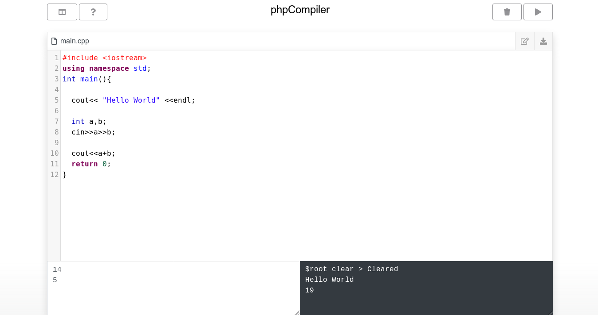

phpCompiler
The basic PHP Compiler for Python , Cpp , Java , C11 ,C
git clone https://github.com/eminmuhammadi/phpCompiler.git
Getting Started
These instructions will get you a copy of the project up and running on your local machine for development and testing purposes. See deployment for notes on how to deploy the project on a live system.
Prerequisites
What things you need to install the software and how to install them
apt-get install g++apt-get install gccapt-get install clangapt-get install javacapt-get install python| Languages | Command | |
|---|---|---|
| 1 | C++ | apt-get install g++ |
| 2 | C11 | apt-get install clang |
| 3 | C | apt-get install gcc |
| 4 | Python | apt-get install python |
| 5 | Java | apt-get install javac |
Installing
Main source code is located in src/phpCompiler.php. For using this class in project you need to set up:
require_once 'vendor/autoload.php';and Create new class using eminmuhammadi\phpCompiler()
$COMPILER = new eminmuhammadi\phpCompiler();Testing
After installing recomended to run Test service in test/testAll.php
Declare variables
| Variable | Command | |
|---|---|---|
| 1 | command | root software |
| 2 | executable | runner |
| 3 | runFile | run file |
| 4 | time | time for running |
| 5 | code | main code |
| 6 | input | input for code |
| 7 | fnCode | code file name |
| 8 | fnInput | input file name |
| 9 | fnError | error file name |
$env = [ 'command' => 'g++ -std=c++11', 'executable' => 'a.out', 'runFile' => './a.out' , //out 'time' => '1', //seconds 'code' => $_POST['code'] , 'input' => $_POST['input'], 'fnCode' => 'main.cpp', 'fnInput' => 'input.txt', 'fnError' => 'error.txt' ];time makes executation against to looping
Set time for executation (Attention)
$COMPILER->setTimeOut($time);This rule make php file against to looping.
Run & Create JSON Service
Collect all datas for compile procession.
$RESULT = $COMPILER->Run( $env['command'], $env['time'], $env['executable'], $env['runFile'], $env['code'], $env['input'], $env['fnCode'], $env['fnInput'], $env['fnError'] );That’s all and we need to create application service a json type.
header('Content-Type: application/json'); $data = [ 'code' => $env['code'] , 'time_limit' => $time, 'input' => $env['input'], 'result' => $RESULT ]; echo json_encode($data,JSON_PRETTY_PRINT);JSON shows like :
{ "code": " #include <iostream>\r\n #include <string>\r\n using namespace std;\r\n\r\n int main()\r\n{\r\n\r\n cout <<"Hello World"<<endl;\r\n return 0;\r\n}\r\n ", "time_limit": 1000, "input": "", "result": { "output": "Hello World\n", "time": "0.01", "error": "", "verdict": "AC" }}Verdicts
| Verdict | Explain | |
|---|---|---|
| 1 | CE | Compilation Error |
| 2 | TLE | Time Limit Exceed |
| 3 | RTE | Run Time Error |
| 4 | AC | Accepted |
Authors
- Emin Muhammadi - Initial work - eminmuhammadi
See also the list of contributors who participated in this project.
License
This project is licensed under the MIT License - see the LICENSE file for details